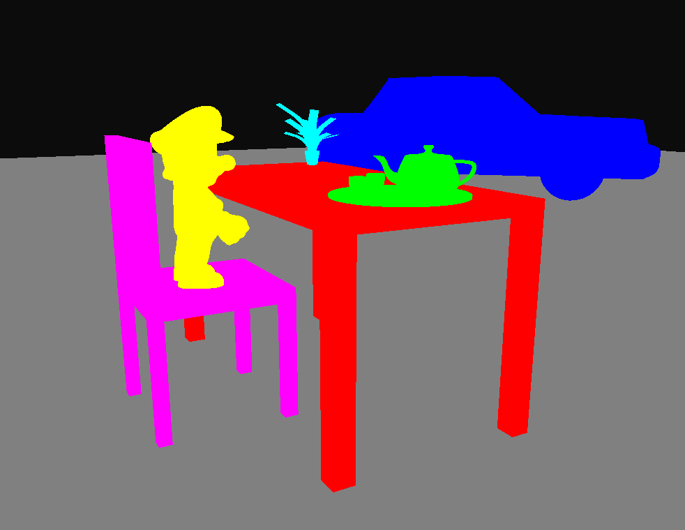
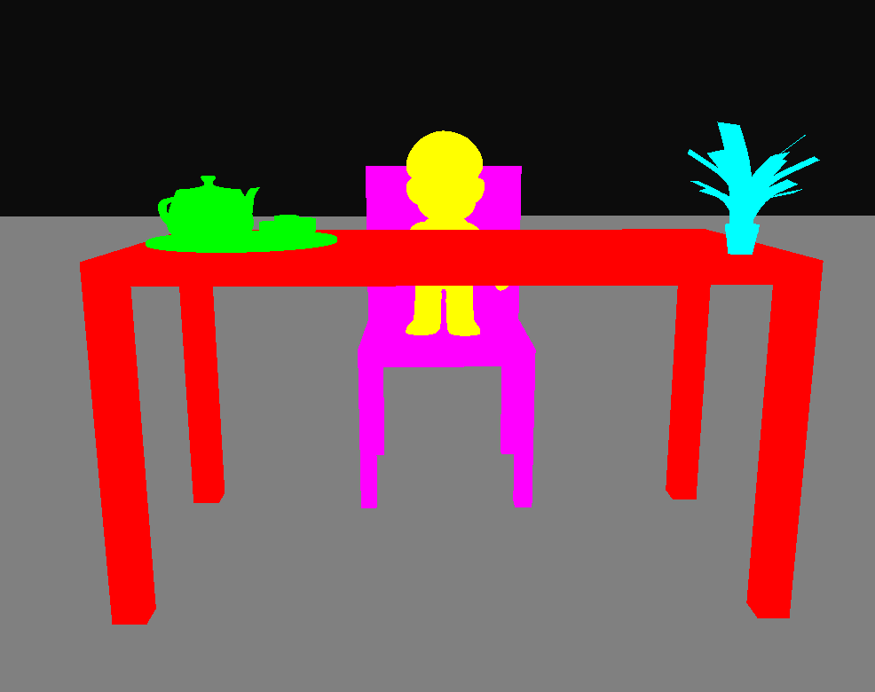
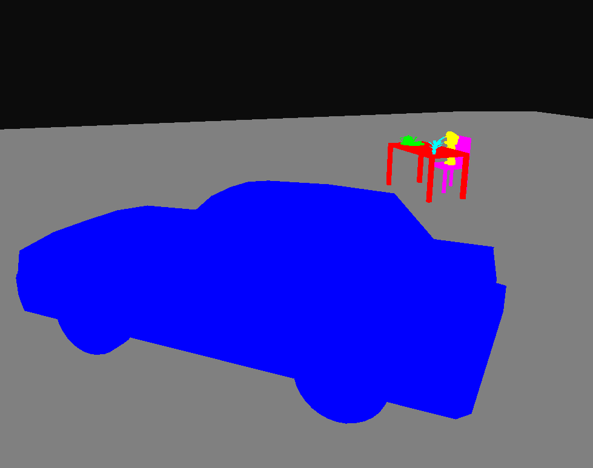
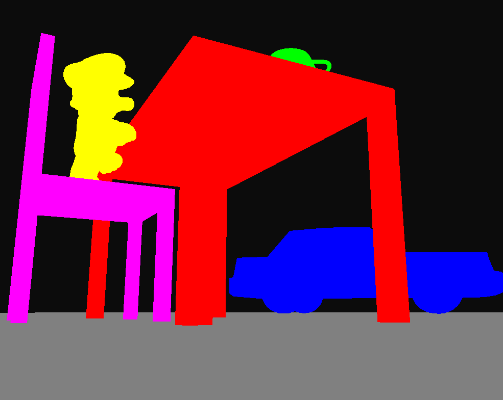
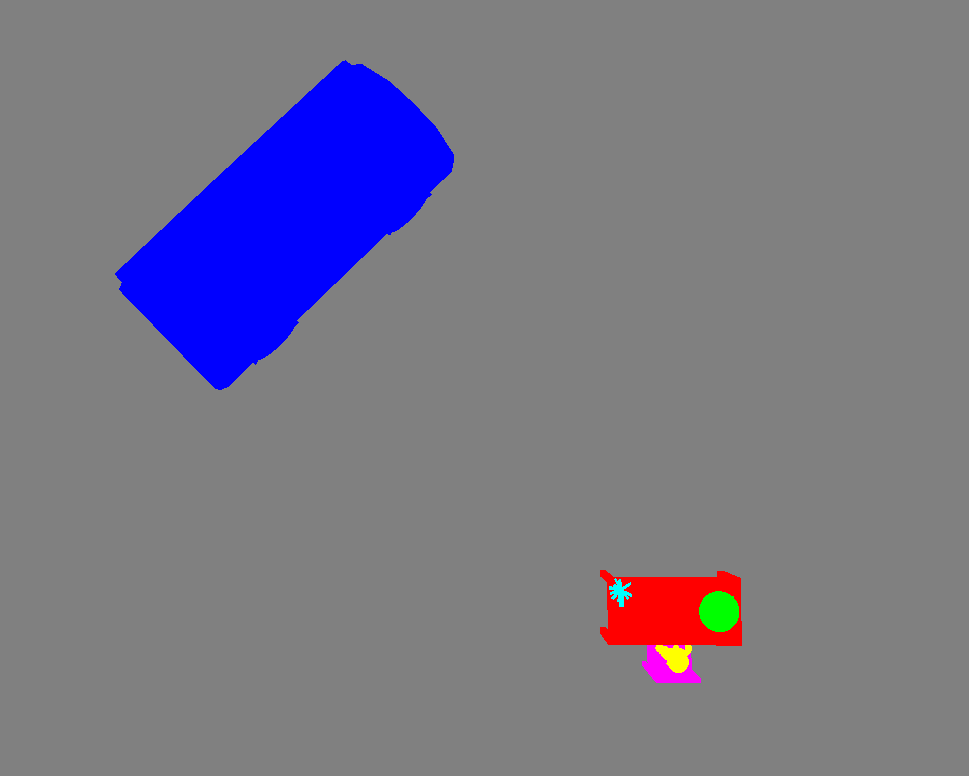

We used opengl transformations to relocate the models and create a scene of our choice. Each model was given a color(which was sent to the fragment shader through a uniform) and a transformation matrix which positions the model into its appropriate place in the scene.
Once the transformation matrices were computed for each model, they are used inside the render loop before each draw call of the model.





Screenshots of different angles of the scene